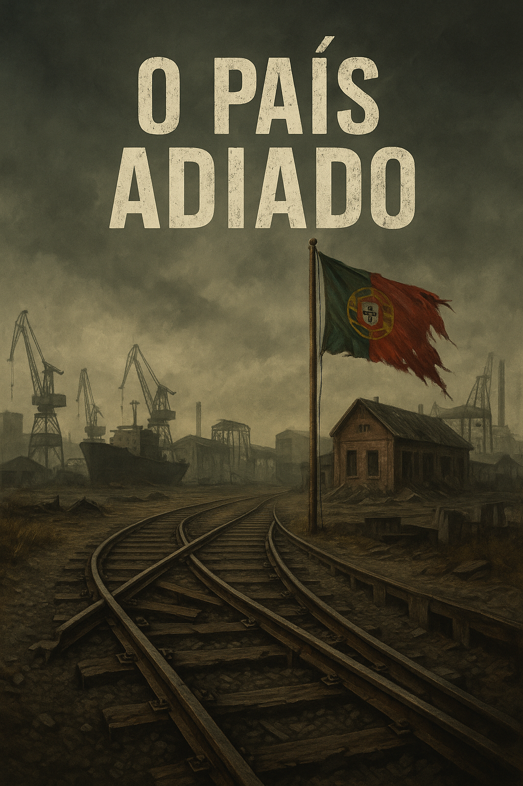

Publicado em 2025-05-07 09:24:18
“Portugal é hoje o resultado de uma liberdade sem exigência, de uma revolução sem rumo, e de uma democracia sequestrada por mediocridades e interesses obscuros.”
Após o 25 de Abril, Portugal teve todas as condições para construir um país moderno, próspero e socialmente justo. Mas o que se seguiu não foi uma revolução de progresso — foi um assalto prolongado à esperança.
Os sindicatos, em vez de garantirem justiça, tornaram-se forças de bloqueio, incapazes de dialogar e sempre prontos a paralisar o país. Em nome dos trabalhadores, destruíram os instrumentos que os sustentavam: a Lisnave, a Setenave, a Sorefame, a Siderurgia Nacional e até a CP foram minadas por greves constantes, má gestão e uma cultura de conflito permanente.
Hoje, a CP sobrevive com comboios com 40 anos, enquanto continua a fazer dezenas de greves por ano, sem consequências, sem respeito por quem trabalha, estuda ou simplesmente precisa de se mover.
O Estado tornou-se um polvo controlador que tudo abarca, que tudo nomeia, que tudo manda. Criou-se uma administração pública ineficiente, mastodôntica, onde a competência foi substituída por lealdade partidária. Os concursos são armadilhas, os quadros são feudos, e a inovação é punida.
Governos vão e vêm, mas o sistema mantém-se. O país continua refém dos mesmos vícios: promessas vazias, compadrios eternos, corrupção legalizada sob a forma de consultorias, nomeações e contratos públicos feitos à medida dos amigos.
A liberdade de Abril foi celebrada, sim — mas rapidamente sequestrada por partidos e estruturas de poder que reproduziram, com outra roupagem, o mesmo autoritarismo, a mesma repressão do talento, a mesma exclusão dos melhores. Hoje, quem pensa livremente é marginalizado. Quem se acomoda, sobe.
Portugal tornou-se um país adiado. Um país sem rumo. Um país onde a inteligência é empurrada para fora e onde a mediocridade faz carreira. Um país onde os crimes do colarinho branco raramente conhecem justiça, e onde o cidadão comum vive entre o imposto, o atraso e o engano.
É urgente escrever, denunciar, acordar. Porque se o povo não falar, os podres continuarão a governar. A democracia sem voz é apenas aparência. E Portugal, neste momento, precisa mais de verdade do que de discursos bonitos.
Que esta crónica seja um grito entre muitos. E que um dia, a liberdade volte a ser aquilo que nos prometeram: uma ponte para o futuro — e não um abismo pintado de festa.